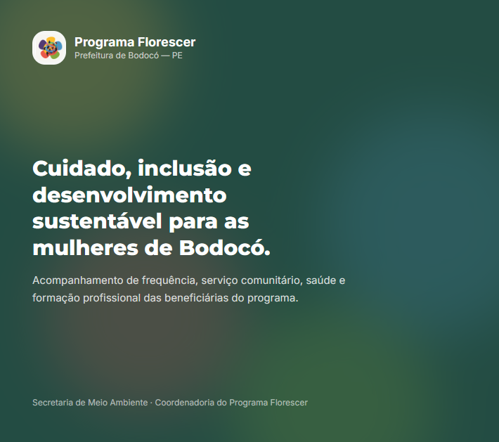

Sistema de acompanhamento do programa social da Prefeitura de Bodocó — PE, em parceria com a Secretaria de Meio Ambiente: frequência, qualidade do serviço comunitário, saúde e formação profissional das beneficiárias.
O Programa Florescer é uma iniciativa da Prefeitura Municipal de Bodocó com a Secretaria de Meio Ambiente em que mulheres do município prestam serviço comunitário de limpeza urbana e recebem um benefício social municipal. Mais do que a contrapartida financeira, o programa acompanha a saúde e a qualificação profissional das participantes — cuidado, inclusão e desenvolvimento sustentável para as mulheres de Bodocó.
Antes do sistema, frequência, exames e cursos eram controlados em listas separadas, o que dificultava saber a situação completa de uma beneficiária e justificar o pagamento do benefício. O sistema reúne tudo isso em um acompanhamento único.

Backend em Node.js com TypeScript, com Prisma ORM sobre PostgreSQL e frontend em React — a mesma stack padrão que adoto nos demais sistemas, o que reduz o custo de manter vários projetos em paralelo. A escolha por uma interface web se deu porque o registro acontece em contextos diferentes — na coordenadoria, no campo e no acompanhamento de saúde — e precisava funcionar em qualquer dispositivo, sem instalação.
O TypeScript do início ao fim ajudou a manter consistência entre as regras do programa no backend e o que a interface apresenta, evitando divergência nas condições que definem se uma beneficiária está em situação regular no mês.
Desenvolver para um programa social exige entender as regras antes do código: o que conta como falta justificada, como um exame pendente afeta a participação, o que acontece quando alguém conclui um curso. Trabalhar junto à Secretaria de Meio Ambiente mostrou o quanto o levantamento de regras de negócio é a parte mais determinante de um sistema desse tipo — a implementação vem depois e é a parte fácil.